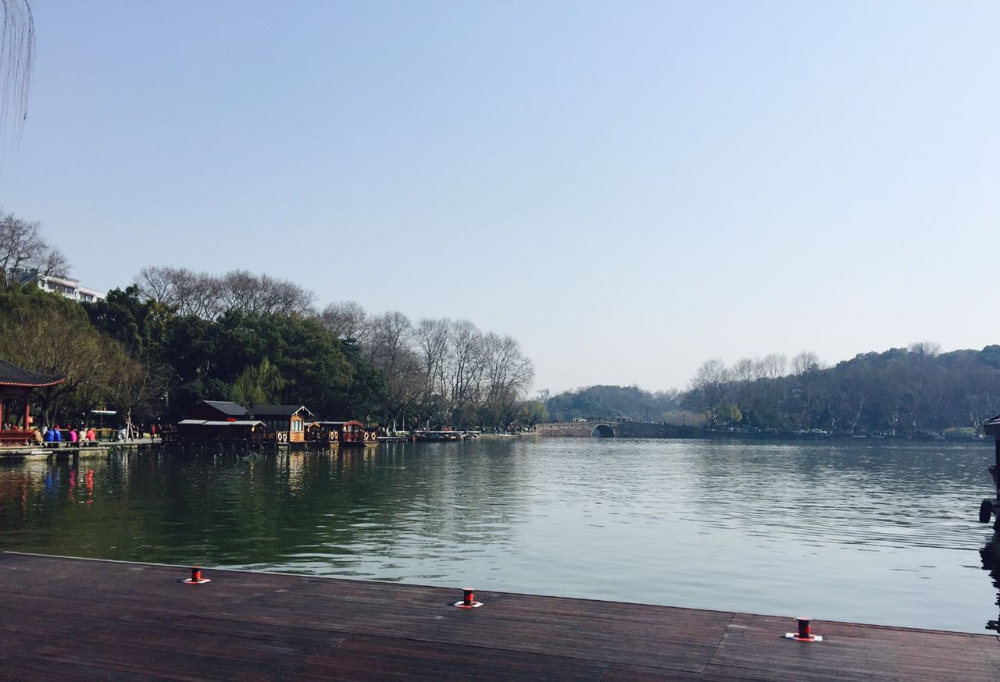
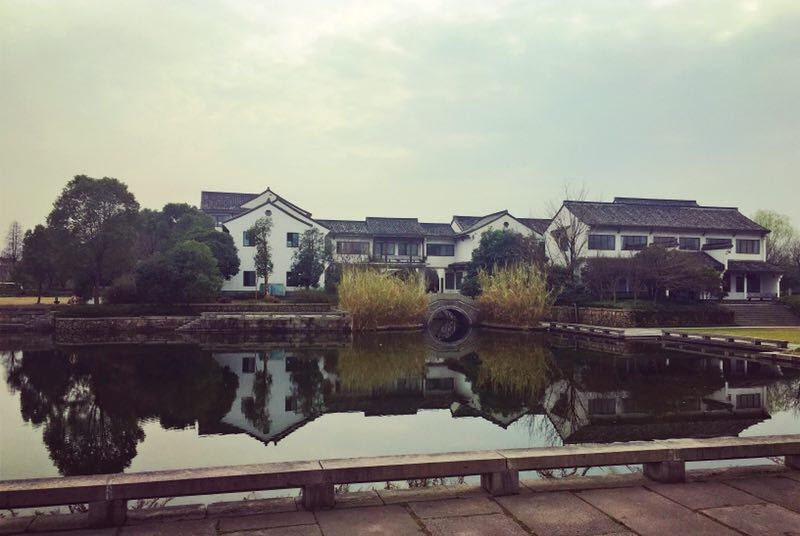
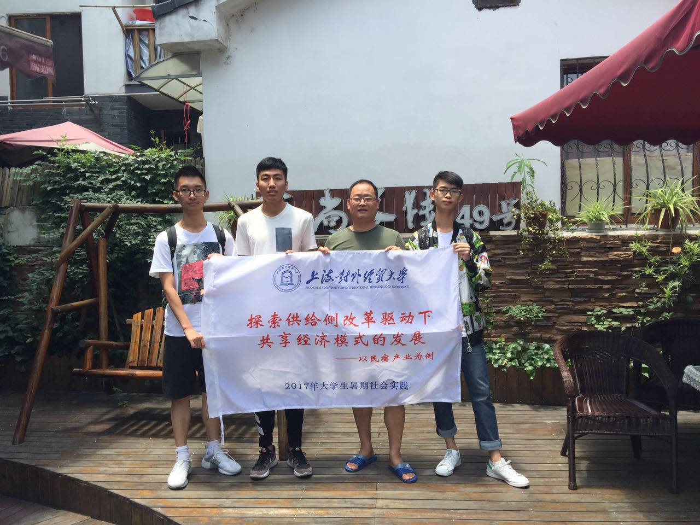

庞正扬：短暂而充实的社会实践一晃而过，却让我从中领悟到了许多东西。首先是自己第一次作为一个团队的队长，带队的经验没有那么丰富，在这里要感谢我的队员们对我的包容与支持。从最初的选题、联系民宿相关负责人到实际采访、后期的总结，每一项都离不开大家的全力配合。这次暑期社会实践不仅完成了调研任务，还培养了整个队伍的团队意识。大家走在热辣辣的杭州街上，汗流浃背，却未曾放弃，这也是我很感动的地方。 对于我们调研的主题，我认为我们选中了当今社会共享经济中的热点问题，并且针对这个问题进行了多方面多角度的调研活动，取得了理想的成果。我也希望通过这次实践活动，可以为社会带去最新的民宿发展情况以及优秀民宿的经营经验，为民宿这种共享经济新模式的发展尽一份绵薄之力。  陈若洁：经历了将近一周的社会实践，收获了很多，也感悟到了很多。不论是开始时大家为了选定主题而不断的讨论，为了使投标书更加的完善而去一遍又一遍的修改，也不论是实践开始后，每天顶着烈日外出走访调查，汗珠滴落早已浸湿全身的队服，更不论是每天写总结，写日记，写推送。虽然辛苦却十分值得，“纸上得来终觉浅，觉知此事要躬行”，社会实践的意义就在于让我们进入社会，深入社会去体会那些在书本中所没有的东西。只有在和相关政府部门了解后我们才知道更为具体的地方政策和情况，只有在和民宿店主沟通后我们才明白民宿也是他们的一种情怀，只有在和队友们一同努力、一同挥洒汗水后才会体会到付出后的快乐。  张雅丽：从最初的组建团队、立项选题，到一次次的开会讨论、设计问卷、确定提纲，直至最后走向实践，完成调研，这其中现在说来轻描淡写的每一步都很不容易。可以说，这一次的实践并没有想象中的那么顺利，虽说没有那么夸张地血与泪，但整个团队真真实实的为之撒下过汗水，顶着40度的高温，甚至一瓶冰水都能成为奢求，在政府、民宿协会与各家特色民宿之间奔走，尽可能的得到更多的一手资料，尽心尽力的想把这个项目做的更完善，每一次的瓶颈、每一次的打击，甚至被轻视、被质疑，很庆幸我们在那种接连不断的挫败感中依旧能相互扶持，真的很感谢每一位队友的付出、协作与相伴。 说到底，民宿做的就是一个“情”字，而人与人相处也不过就是一个“情”字。很怀念这短短的6天时间，尽管每天晒得油光满面、走到脚上磨起水泡、每晚累到摊在床上，但那些美好始终是挥之不去的呀，亲密到可以和你们挤一张床、毫不嫌弃的喝着同一瓶西湖“泪”、膜拜着堪称人肉美食导航仪的XX民宿前台小姐姐、说着一些只有彼此才懂的话语、甚至让我怀念的还有那无意中开了一夜的17度空调。就像我怀念这些充满着人情味的生活百态一样，民宿也会为你带来不一样的情，或许是那门前的小桥流水、红色的大圆筒信箱，又或者是那天你玩累了老板娘为你洗的衣服，这些都将成为你怀念的素材，默默地侵袭着你的记忆。这或许就是民宿，以共享的姿态向你展示它的柔情。  游逍：通过这几天的暑期实践，我重新认识了民宿。以前出去旅游的时候，在选择住宿的时候，我会纠结是选择传统酒店还是可以感受当地民风民俗的民宿。对于民宿，我一直比较担心的是安全问题和清洁问题，但是通过这次的实地调研，已经完全打消这方面的顾虑了。 此次调研，让我更深层次地了解民宿。民宿是共享经济的一种模式，当地居民把家里多余的住宿空间共享给游客，让游客更能体会到当地的特色风情。大众普遍认为，民宿不具有传统酒店系统的管理模式，可能存在环境安全和清洁方面的问题。但是据我们调查，民宿亦有自己的安保系统，甚至较于传统酒店，安全性更高，因为传统酒店，客流量大，入住人员多，较难管理，而民宿入住人员有限制，相对而言易于管理，但凡发生纠纷，能及时得到解决（据我们的调查，青芝坞民宿区自建立以来，从未发生纠纷）。其次，民宿的清洁程度也是不亚于传统酒店的，由于民宿的飞速发展，行业竞争力逐渐增强甚至出现趋于饱和的倾向，所以民宿的清洁、待客态度等也成为了有力的竞争条件。 经过这次调研，我更深入了解了民宿，民宿这种新型共享经济模式更适用于现在的信息时代，也适应于如今的小康社会，人们生活水平逐渐提高，从对生活的物质要求转变为精神层次的享受，而民宿正能满足人们日益增长的文化要求和精神享受，能让人们更好地感受到旅游的乐趣，了解到不同地区的文化特色，从而促进了社会的和谐以及人民生活幸福度的提高。